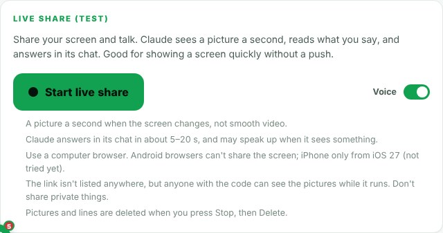
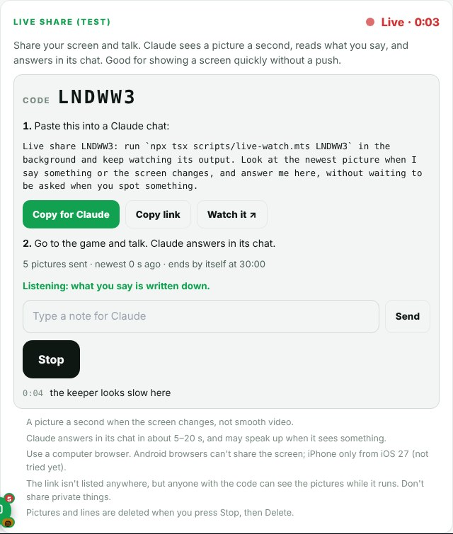
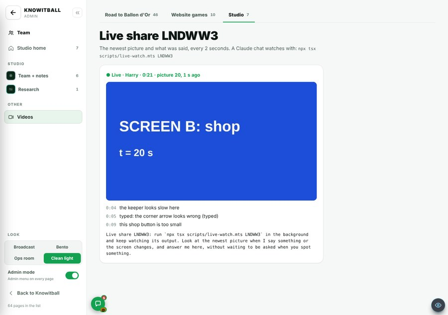
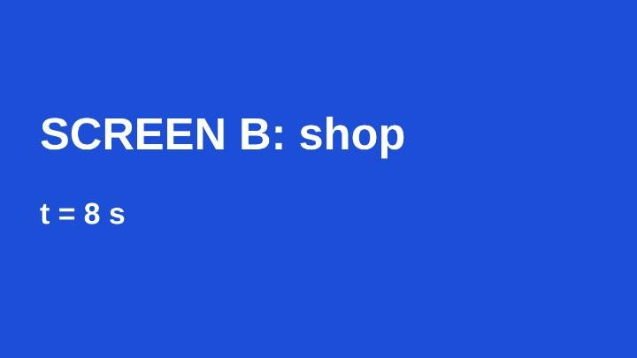
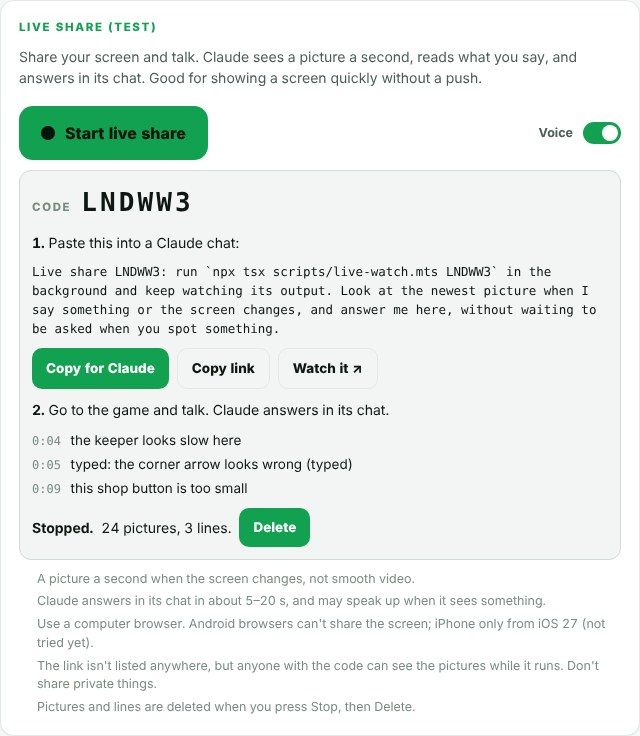
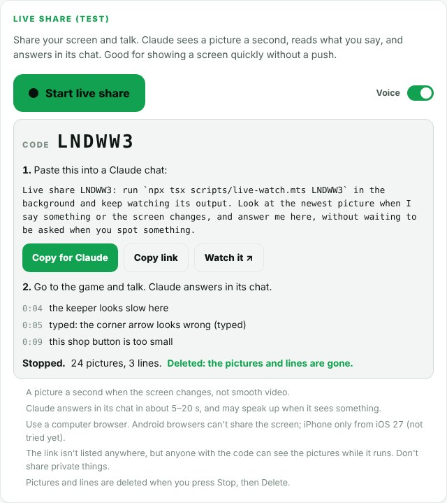
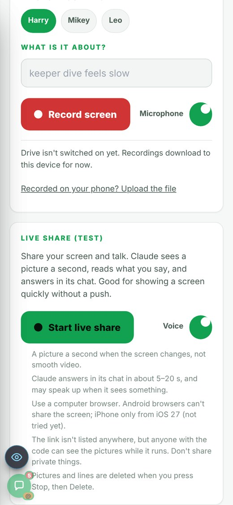

On the Harry branch, not live yet.
Overnight round, 20 Oct 2026. Admins only. No SQL. In Admin → Patch notes this is v0.91.
To show Claude a screen you needed a recording or a push first.
Claude cannot look at your screen on its own. That Claude had no other way is reasoned.
A new card on Admin → Videos: Live share (test). Admins only. Press Start live share. The browser asks which screen, window or tab to share. Voice is on by default. You then get a 6-letter code with three buttons:


A shared screen is no use if Claude cannot read it.
Claude runs npx tsx scripts/live-watch.mts <code> in the background. Every 2 seconds it prints:
The line you paste says: look at the newest picture when I say something or the screen changes, and answer me in the chat without waiting to be asked.


Video is heavy. Claude only needs to see what changed.
The page sends one picture a second, 720 px wide, and only when the screen changed (it compares colour). Your speech is written down as text. A typing box is there too, for where there is no voice. Pictures and lines go to Storage tierlist-images/live/<code>/ through an admin route with the service key. The newest 300 are kept. No SQL.
Measured on this machine: a picture reaches the watcher in 1.2 to 2.5 s. Speech reaches it in 0.5 to 2.5 s. Claude’s reply comes on top of that. The card says Claude answers in its chat in about 5 to 20 s.
A screen share holds things you may not want to keep.
It ends on Stop, on the browser’s own Stop sharing, or by itself after 30 minutes. Delete then removes every picture and line. In the test: “Stopped. 24 pictures, 3 lines.” Then Delete: “Deleted: the pictures and lines are gone.”


A share has a code, not a guest list.
The card says it: the link is not listed anywhere, but anyone with the code can see the pictures while it runs.
The card warns you: do not share private things. Pictures and lines are deleted when you press Stop, then Delete.
Screen sharing is a browser feature, so it is not the same everywhere.
This list is the builder’s own note. It was not tried on each browser. The card says iPhone is “not tried yet”.
Use a computer browser. Chrome and Edge: pictures and voice. Firefox: pictures only. Android browsers cannot share the screen. iPhone Safari is reported to work from iOS 27 (not tried).

The test used a fake screen and fake speech. No real Supabase write, no real voice, no Safari and no background tab were tried.
It ran in headless Chromium on a build machine.
Start a share on a computer, say something, and look for the pictures in Storage and a reply in the chat.
The full npm run build was killed for memory 3 times.
The build machine ran out of memory. tsc on its own passes.
Run the full build on a bigger machine before this goes to main.
Pictures. 1 a second. 720 px. Only when the screen changed (colour compare). Newest 300 kept. Stored in tierlist-images/live/<code>/.
Limits. The code has 6 letters. A share ends by itself at 30 minutes.
Watcher. Every 2 s. A small change on screen shows at most every 30 s.
Speed, measured here. Picture to the watcher: 1.2 to 2.5 s. Speech to the watcher: 0.5 to 2.5 s. Claude’s reply is extra.
The test run in the pictures. 5 pictures at 0:03, then 24 pictures and 3 lines at the stop.
Reasoned. At one picture a second, 300 pictures is at most 5 minutes of a changing screen. So on a long share the earliest pictures drop off. A full 30 minutes could send up to 1,800 pictures, but only the newest 300 stay. I worked this out from the numbers above. I did not test it.
Nothing was filmed. The stills show each state of the card, the viewer page, and a frame as Claude gets it.